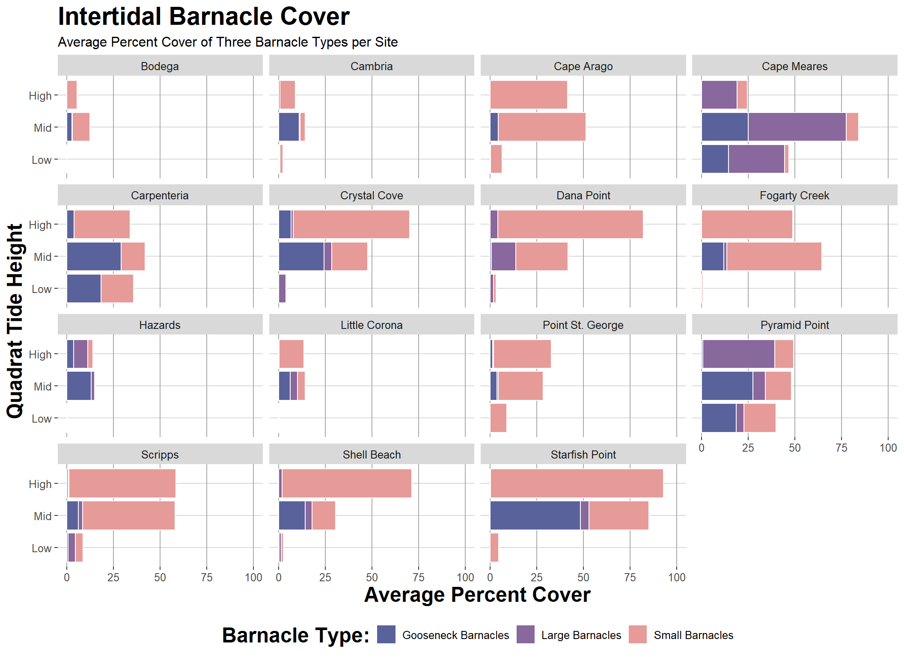

Show code
library(tidyverse)
library(here)
library(forcats)
library(janitor)
library(ggthemes)
library(PNWColors)Created on : 2026-10-25
Updated on : 2026-10-26
library(tidyverse)
library(here)
library(forcats)
library(janitor)
library(ggthemes)
library(PNWColors)intertidaldata <- read_csv(here("Week_09", "Data", "intertidaldata.csv"))
head(intertidaldata)# A tibble: 6 × 13
Site Transect Quadrat `Bare Rock` Algae Mussels `Small Barnacles`
<chr> <dbl> <chr> <dbl> <dbl> <dbl> <dbl>
1 Scripps 1 Low . 25 75 0 2
2 Scripps 1 Mid 50 0 5 50
3 Scripps 1 High 20 50 1 50
4 Scripps 2 Low 10 85 0 0
5 Scripps 2 Mid 40 5 10 40
6 Scripps 2 High 40 5 0 55
# ℹ 6 more variables: `Large Barnacles` <dbl>, `Gooseneck Barnacles` <dbl>,
# Anemone <dbl>, `Whelks (Counts)` <dbl>, `Crabs (Counts)` <dbl>,
# `Stars (Counts)` <dbl>This dataset contains species abundance information in the form of percent cover and individual counts of some species (Whelks, Crabs, and Stars). First, the column titles need to be converted to a more R-friendly format.
intertidaldata |>
clean_names() -> clean_intertidaldataglimpse(clean_intertidaldata)Rows: 450
Columns: 13
$ site <chr> "Scripps", "Scripps", "Scripps", "Scripps", "Scrip…
$ transect <dbl> 1, 1, 1, 2, 2, 2, 3, 3, 3, 4, 4, 4, 5, 5, 5, 6, 6,…
$ quadrat <chr> "Low .", "Mid", "High", "Low", "Mid", "High", "Lo…
$ bare_rock <dbl> 25, 50, 20, 10, 40, 40, 0, 30, 60, 0, 45, 70, 5, 3…
$ algae <dbl> 75, 0, 50, 85, 5, 5, 100, 5, 4, 100, 10, 0, 70, 0,…
$ mussels <dbl> 0, 5, 1, 0, 10, 0, 0, 10, 1, 0, 3, 0, 0, 5, 0, 0, …
$ small_barnacles <dbl> 2, 50, 50, 0, 40, 55, 0, 40, 20, 0, 25, 25, 20, 60…
$ large_barnacles <dbl> 5, 5, 0, 0, 1, 0, 1, 0, 0, 0, 15, 5, 5, 0, 0, 5, 0…
$ gooseneck_barnacles <dbl> 0, 0, 0, 5, 5, 0, 0, 30, 5, 0, 0, 0, 0, 0, 0, 0, 0…
$ anemone <dbl> 3, 0, 0, 0, 0, 0, 0, 0, 0, 0, 5, 0, 0, 10, 0, 0, 1…
$ whelks_counts <dbl> 0, 0, 0, 0, 0, 0, 0, 0, 1, 0, 0, 0, 0, 1, 0, 0, 0,…
$ crabs_counts <dbl> 0, 0, 0, 0, 0, 0, 0, 0, 0, 0, 0, 0, 0, 0, 0, 0, 0,…
$ stars_counts <dbl> 0, 0, 0, 0, 0, 0, 0, 0, 0, 0, 0, 0, 0, 0, 0, 0, 0,…The column names look a lot better, but I can already see some errors in the intertidal data file. Let’s get a summary of what’s going on in there.
clean_intertidaldata |>
count(quadrat, sort = TRUE)# A tibble: 5 × 2
quadrat n
<chr> <int>
1 High 150
2 Low 149
3 Mid 149
4 Low . 1
5 Mid 1 1OK so those two, “Low .” and “Mid 1” look like typos, so let’s fix them.
# I'm pretty sure there is a WAY better method to do this, but I couldn't figure it out :(
# pipe the dataframe in
clean_intertidaldata |>
# mutate the row to replace the problem value with the correct value
mutate(quadrat = replace(clean_intertidaldata$quadrat,
grep("Low .",
clean_intertidaldata$quadrat),
"Low")) -> fixed_intertidaldata
fixed_intertidaldata |>
# do the same thing with the other problem type
mutate(quadrat = replace(fixed_intertidaldata$quadrat,
grep("Mid 1",
fixed_intertidaldata$quadrat),
"Mid")) -> fixed_intertidaldata
# Now let's check the data:
fixed_intertidaldata |>
count(quadrat, sort = TRUE)# A tibble: 3 × 2
quadrat n
<chr> <int>
1 High 150
2 Low 150
3 Mid 150Much better!
Let’s check the other categories as well:
# check site
fixed_intertidaldata |>
count(site, sort = TRUE)# A tibble: 15 × 2
site n
<chr> <int>
1 Bodega 30
2 Cambria 30
3 Cape Arago 30
4 Cape Meares 30
5 Carpenteria 30
6 Crystal Cove 30
7 Dana Point 30
8 Fogarty Creek 30
9 Hazards 30
10 Little Corona 30
11 Point St. George 30
12 Pyramid Point 30
13 Scripps 30
14 Shell Beach 30
15 Starfish Point 30# check transect
fixed_intertidaldata |>
count(transect, sort = TRUE)# A tibble: 10 × 2
transect n
<dbl> <int>
1 1 45
2 2 45
3 3 45
4 4 45
5 5 45
6 6 45
7 7 45
8 8 45
9 9 45
10 10 45Both site and transect seem correct. Alright, let’s factor!
# mutate the quadrat column to be a factor with levels "low", "mid", and "high":
fixed_intertidaldata |>
mutate(quadrat = factor(quadrat, levels = c("Low", "Mid", "High"))) -> fixed_intertidaldata
glimpse(fixed_intertidaldata$quadrat) Factor w/ 3 levels "Low","Mid","High": 1 2 3 1 2 3 1 2 3 1 ...Let’s say I’m only interested in seeing the difference in percent cover of the three barnacle types at low, mid, and high quadrats. See code below for barnacle data selection and summarizing.
fixed_intertidaldata |>
# keep only barnacles and site identifiers
select(site,
transect,
quadrat,
small_barnacles,
large_barnacles,
gooseneck_barnacles) |>
# pivot longer
pivot_longer(cols = c(small_barnacles, large_barnacles, gooseneck_barnacles),
names_to = "barnacle_type",
values_to = "percent_cover") -> barnacles_data
# group_by and summarise the average percent cover into a separate variable
barnacles_data |>
group_by(site, quadrat, barnacle_type) |>
summarise(avg_percent_cover = mean(percent_cover)) -> barnacles_data_avg
glimpse(barnacles_data_avg)Rows: 135
Columns: 4
Groups: site, quadrat [45]
$ site <chr> "Bodega", "Bodega", "Bodega", "Bodega", "Bodega", "B…
$ quadrat <fct> Low, Low, Low, Mid, Mid, Mid, High, High, High, Low,…
$ barnacle_type <chr> "gooseneck_barnacles", "large_barnacles", "small_bar…
$ avg_percent_cover <dbl> 0.0, 0.0, 0.0, 2.7, 0.3, 9.2, 0.0, 0.0, 5.5, 0.5, 0.…Looks good. Now, let’s plot.
barnacles_data_avg |>
ggplot(mapping = aes(x = quadrat,
y = avg_percent_cover, # base plot
color = fct_reorder2(barnacle_type, quadrat, barnacle_type), # reorder the legend
fill = barnacle_type)) +
# make a column graph
geom_col() +
# facet wrap by site
facet_wrap(~site) +
# flip the coordinates to be more aesthetically pleasing
coord_flip() +
# add ylim as "100" was not showing
ylim(0, 100) +
# base theme
theme_hc() +
# edit some of the grid lines to be darker:
theme(panel.grid.major.x = element_line(color = "darkgray"),
title = element_text(face = "bold", size = 18)) +
# labels
labs(title = "Intertidal Barnacle Cover",
subtitle = "Average Percent Cover of Three Barnacle Types per Site",
x = "Quadrat Tide Height",
y = "Average Percent Cover",
fill = "Barnacle Type:") +
# add pretty colors and more lables
scale_fill_manual(values = pnw_palette("Starfish", n = 3),
labels = c("Gooseneck Barnacles", "Large Barnacles", "Small Barnacles")) +
# this helps separate out the colors above
scale_color_manual(values = c("white", "white", "white")) +
# remove color legend
guides(color = "none")
Finally, save the plot:
#ggsave(here("Week_09", "Output", "barnacle_plot.png"),
# height = 8,
# width = 11)